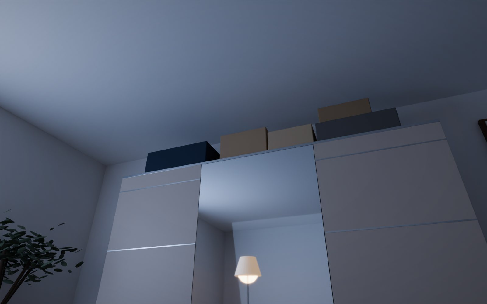
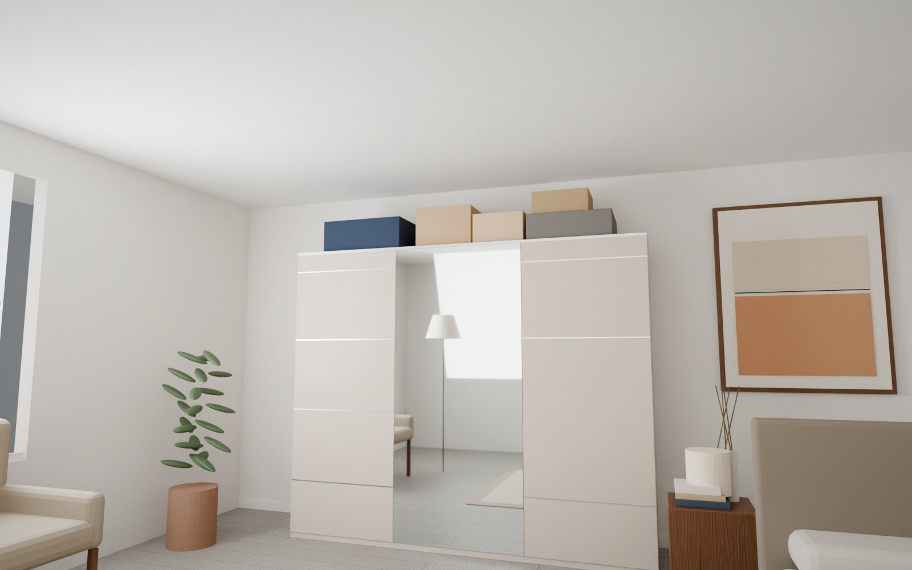
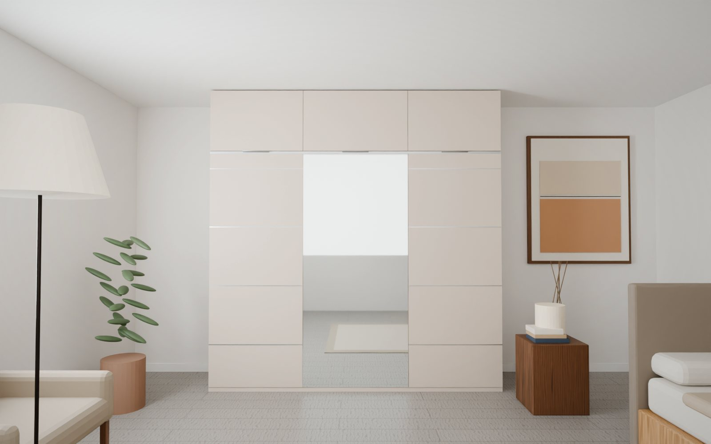

Ahol a szekrényed véget ér,ott kezdődünk.
Méretre épített felső szekrény a meglévő gardróbod tetejére – milliméterre a plafonig. Egyetlen otthonra tervezve: a tiédre.
A díjak és kiállítások a látványprojekt részeként kitaláltak.
Minden otthonban van fél méter, amit senki sem tervezett meg. Mi megterveztük.
A gardrób teteje és a plafon között ott a lakás legzajosabb csendje: dobozok, bőröndök, por. A ZENIT ezt a sávot az otthonod legelegánsabb részévé teszi – a te szekrényedre, a te plafonodra, a te színeidre szabva.
Nem egy újabb bútor kerül a szobádba. A meglévő szekrényed kap befejezést – olyat, mintha mindig is így tervezték volna. Kasmírban, tölgyben, vagy abban az árnyalatban, amit csak te ismersz.




Lekapcsolod a villanyt. Még egyszer látod.
A bőröndöt a tavalyi nyaralásról. A dobozt, amit „majd elpakolsz”. Fél méter, ami minden este ugyanazt súgja: ez még nincs kész.
az fejben is ott van.
Egy szoba sosem lesz nyugodt, ha a legmagasabb pontja zajos. Rendet rakhatsz a polcokon – a szemed mindig felfelé téved.
Egyetlen nyugodt felület. Plafonig.
A vonal ott fut tovább, ahol a szekrényed véget ért. A szoba magasabb lesz, a fal csendes, a bőrönd eltűnik egy ajtó mögött, ami puhán csukódik.
Lekapcsolod a villanyt. És csend van.
Nem látsz semmit, ami dolgod lenne. Csak egy befejezett otthont – amit te terveztél.
Te rajzolod meg. Mi megépítjük.
A ZENIT nem raktárról érkezik. A te arányaidból, a te színeidből, a te plafonodból születik – és csak egyszer készül el. Te döntöd el, hány ajtó nyíljon és merre, hol legyen tükör, milyen fény gyúljon, amikor kinyitod.
Benne van az alkotói kedved – és a mi műhelyünk nyugalma. Az izgalom, hogy valami a tiéd lesz. És a csend, amikor elkészül.
 Látványterv
Látványterv
Kézzel épített. Digitálisan megtervezve.
A magyar asztaloshagyomány türelme és a parametrikus 3D tervezés pontossága egyetlen bútorban. Minden furat helye a modellből jön – minden illesztést ember ellenőriz.
Hat döntés, amit sosem bánsz meg.
Mindegyik apróság. Együtt ezek adják azt a nyugalmat, amit nap mint nap érzel – akkor is, ha már észre sem veszed.
 Látványterv · belső LED
Látványterv · belső LEDBelső fény – ajtónyitásra, melegfehér 2700 K.
 Látványterv · tükrös ajtó
Látványterv · tükrös ajtóTükör a középső ajtón – vagy bárhol, ahol kéred.
Fény, ami vár rád. Tükör, ami tágít.
Kinyitod, és a legfelső polc is világos. Becsukod, és a szoba eggyel nagyobbnak látszik. Két apró döntés, ami minden nap ott van.
Pontosság, amit nem látsz. Csak érzel.
Egy forma, ezer otthon.
Kasmír az eredeti. De a ZENIT-et a te otthonod fejezi be – nézd meg, hogyan él különböző terekben.
Négy lépés. Nulla kompromisszum.
Három-négy hét a rendeléstől a csendes első zárásig. Közben végig tudod, hol tart a darabod.
„Egy szekrényt nem akkor fejezünk be, amikor összeáll, hanem amikor az ajtó először csendben becsukódik.”ZENIT műhely · Budapest
Kezdjük el a te ZENIT-edet.
Tervezd meg pár perc alatt az élő 3D tervezőben – vagy beszélj egy belsőépítésszel, aki visszahív.